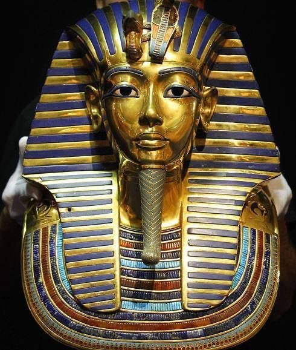
A funerary mask of the 18th-dynasty Ancient Egyptian Pharaoh Tutankhamun, discovered in 1922.
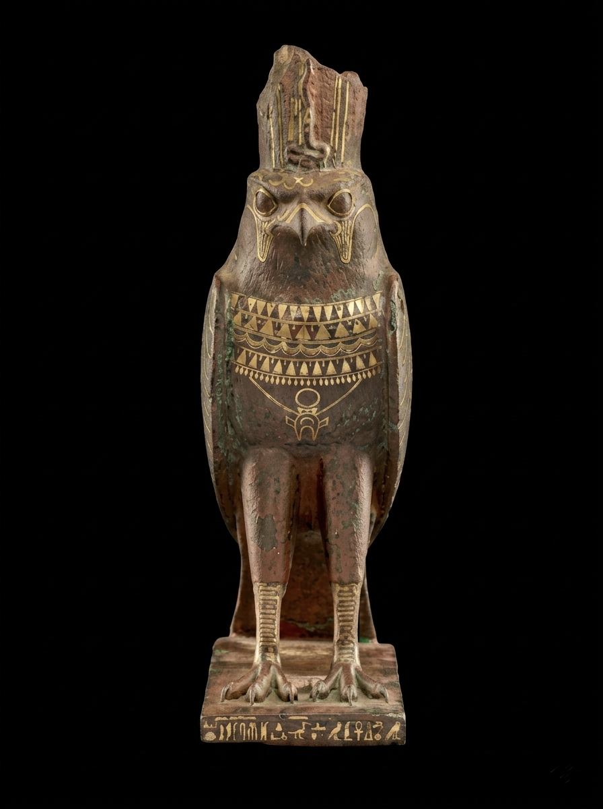
A 26th-Dynasty gilt bronze statuette of Horus from Sais, dedicated by Imhotep to represent divine kingship and the preservation of *maat*.

A 19th-Dynasty red granite colossus from Herakleopolis Magna depicting Ramesses II in a blue crown standing between the deities Ptah and Sekhmet.
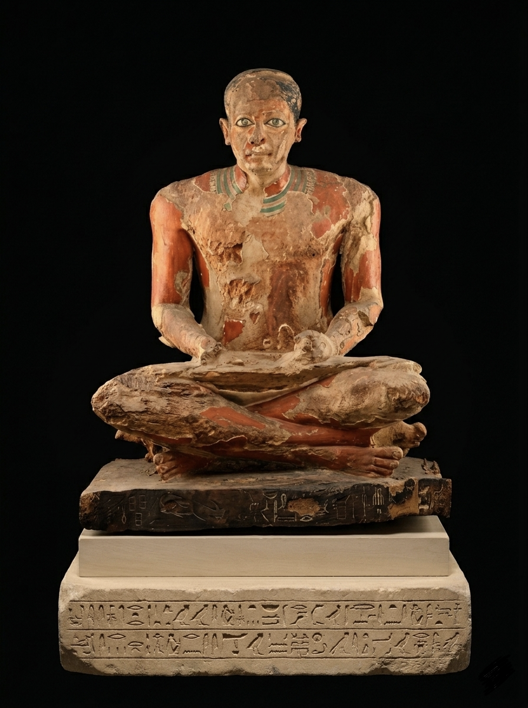
A 5th-Dynasty painted wooden statue of the official Mitri, depicted as a scribe with inlaid eyes and titles identifying him as a priest and administrator.
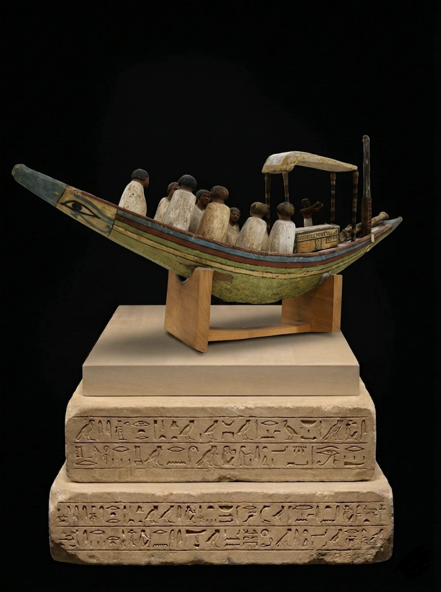
An 1885-discovery from Meir, this 12th-Dynasty painted wooden funerary boat features a model sarcophagus for Ukhhotep beneath a canopy, surrounded by nine mourning figurines.

A gold-covered wooden armchair from Tutankhamun’s Antechamber, featuring an inlaid backrest scene of the king and queen beneath the rays of the Aten sun disk.
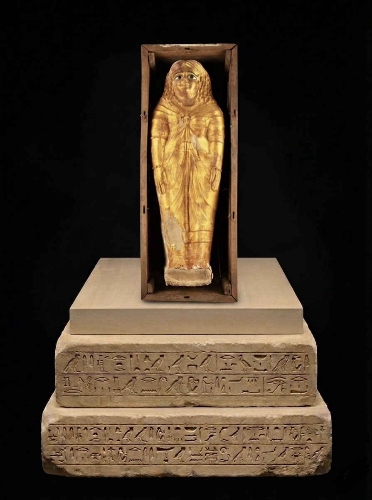
A Roman Period child mummy in a gilded cartonnage and wooden coffin, reflecting a wealthy family's status through its extensive use of gold leaf.
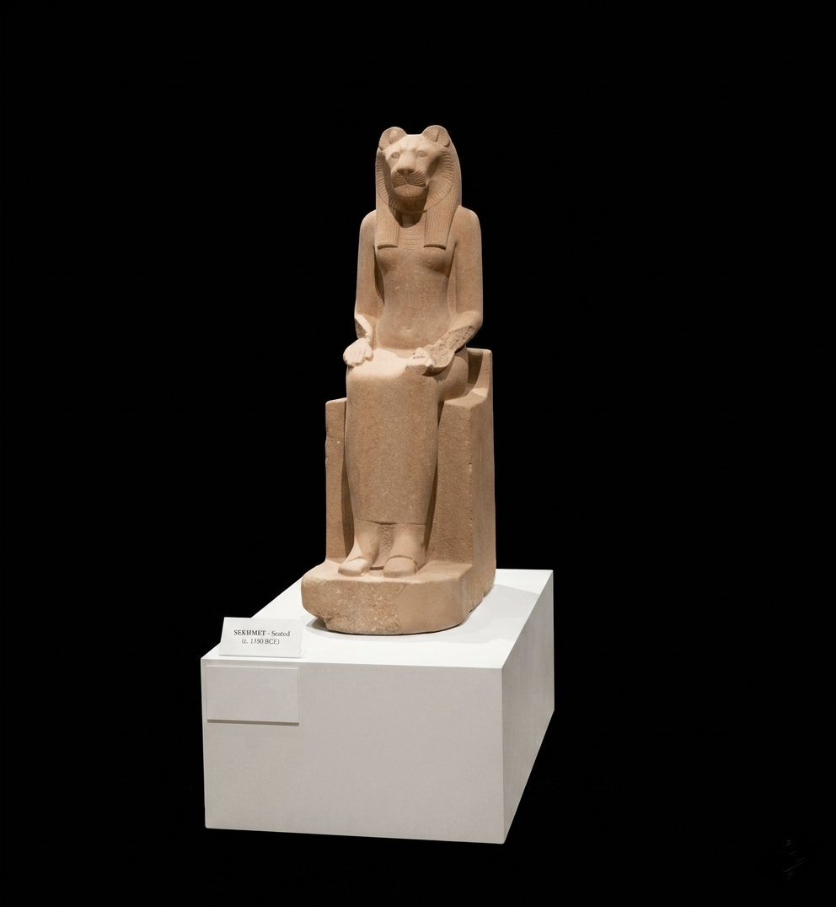
An 18th-Dynasty diorite statue of the lion-headed goddess Sekhmet, originally commissioned by Amenhotep III to provide powerful protection and later moved to the Temple of Mut at Karnak.
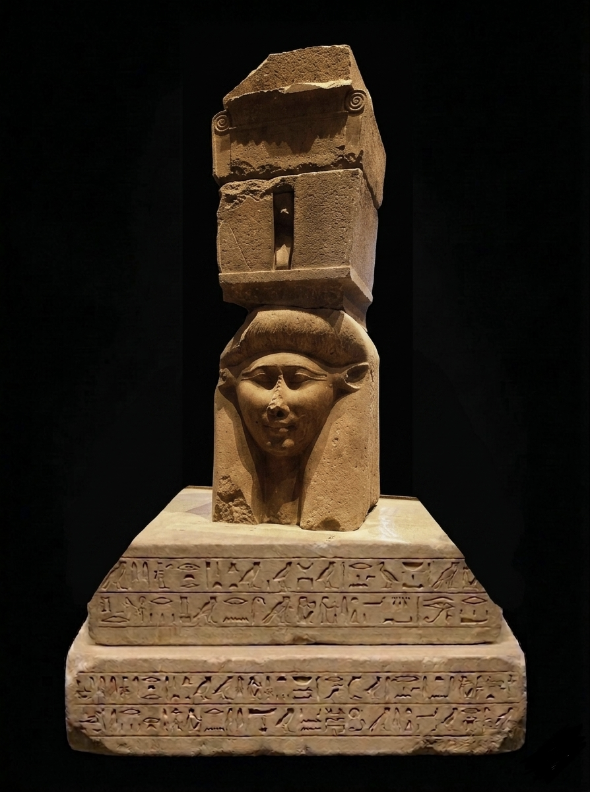
A red granite Hathor-headed capital from Mendes, designed in the form of a giant sistrum and likely part of a columned hall associated with the sacred ram cemetery.
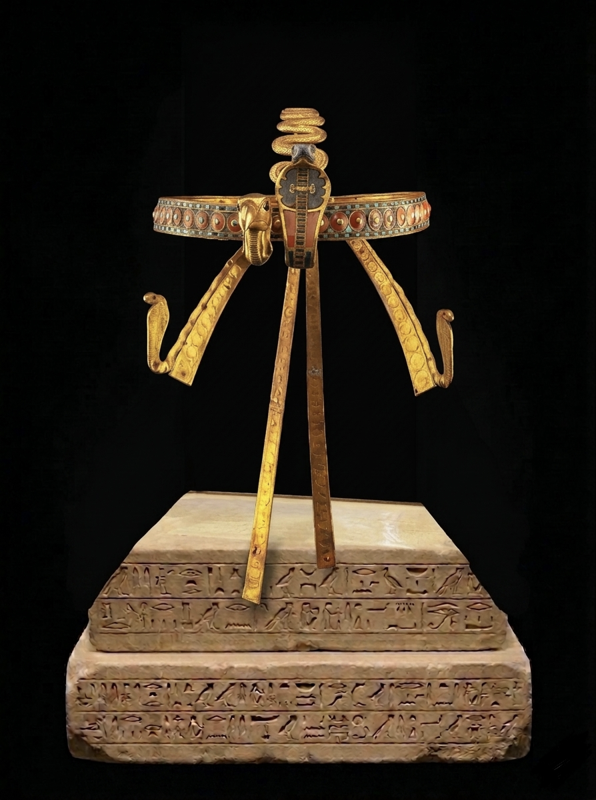
An 18th-Dynasty solid gold diadem from Tutankhamun’s mummy, featuring a carnelian-inlaid fillet and removable vulture and cobra insignias symbolizing royal sovereignty over a unified Egypt.
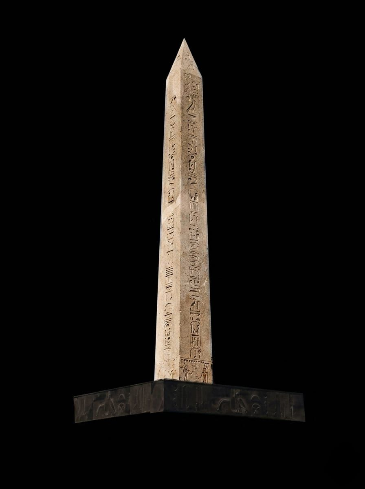
The 19th-Dynasty "Hanging Obelisk" at the Grand Egyptian Museum, a 16-meter granite monument from Tanis featuring the cartouches of Ramesses II elevated on a modern platform for visitor viewing.
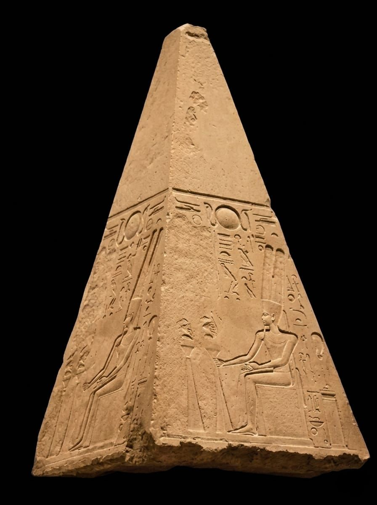
An 18th-Dynasty red granite pyramidion from a Karnak obelisk, originally depicting Queen Hatshepsut being blessed by Amun-Re before her images and names were later erased and altered.
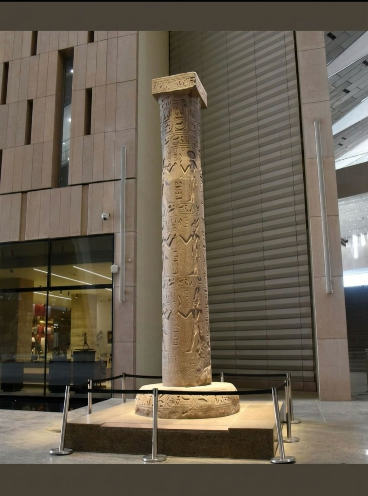
A 19th-Dynasty composite column from Heliopolis commemorating King Merenptah’s victory against border transgressors, featuring relief scenes of the king receiving weapons from various deities.